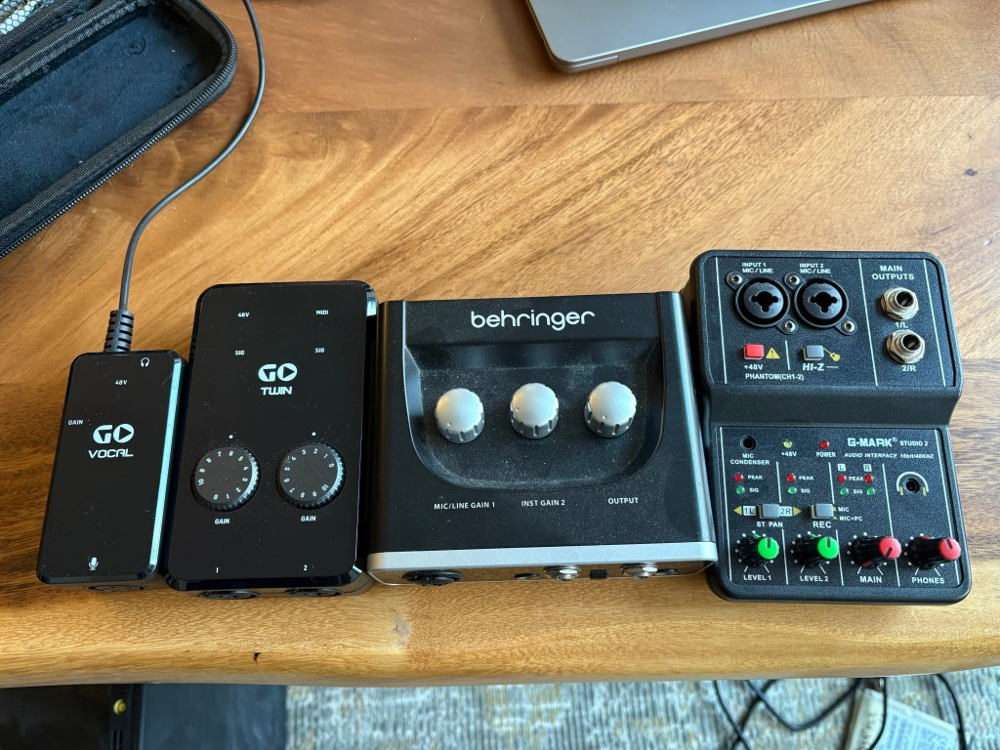

Portable phantom power

I was on a quest for a small phantom-powered mic pre that could be powered by batteries for one of my live rigs. I had a flute and various small instruments to play along with my synths and I wanted to have a single condenser mic set up and running through my effects. I figured this would be a pretty easy ask but I ended up getting a bunch of things before I found something that worked.
First off was an inexpensive Behringer audio interface that I already had. The UM2 has an XLR mic input on it that supports 48v phantom power. I figured I’d be able to just power it from a USB power bank and just use it with direct monitoring enabled. I was wrong. The interface does not power up unless actually connected to a USB host, not just power.
Next thing I tried was a TC Go Twin that was on clearance at Sweetwater. I think now I know why they were on clearance. On paper it looks like just the thing. Battery powered and has phantom power. However again it can’t be powered on unless connected to a host, and even worse the host has to be connected with the lightning cable that comes with the interface. The mini-USB connector is not actually USB I think. It’s sort of one of those camera style interfaces that they used to connect the 8 pin lightning. So that means I also can’t connect it to anything other than an older iPhone.
I think the Go Vocal was next. This is an interesting little box. It’s powered by a 9v battery and does not have any computer connectivity at all. It’s analog only. It does do nicely at powering a mic but the only way to get audio out is via the 4-way 1/8″ cable that comes out of it. The headphone output is only for loopback via the audio input from the computer. Works but it’s a little annoying to have to use a mic/line splitter dongle instead of just plugging into the headphone jack.
Finally the little mixer that I got from Amazon. Well this thing was pretty cheap and honestly it could be a lot worse. The plastic case is actually pretty sturdy even if the knobs are a little iffy. It works with USB power with or without a computer connection. USB audio works well and it does have phantom power on one channel. It has this weird stereo split button instead of pan pots, which is fine for this use case. It’s cool that it has a hi-z switch for plugging in a guitar. This little thing was a winner I think. I have some other little mixers that I think I had to throw away because they were so noisy. They even had flimsy metal cases. I’ll take the sturdy plastic in this case.